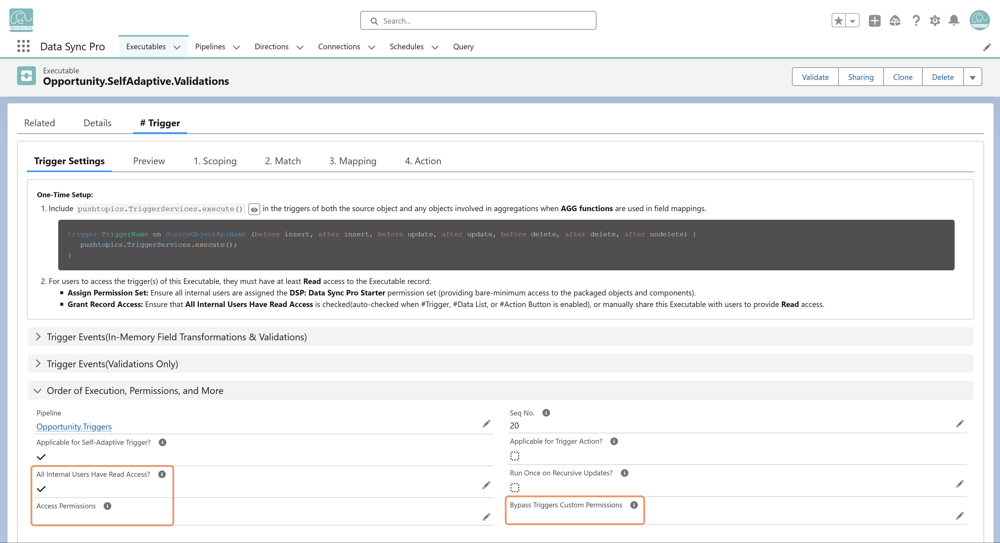

Access to a #Trigger is controlled through Executable record sharing and a few configurable permissions:
- Permission Set — DSP: Data Sync Pro Starter is the minimum required permission set.
- Executable Record Access — When a trigger event is enabled, DSP automatically checks All Internal Users Have Read Access? and creates a sharing record granting all internal users read access to the Executable. Uncheck this at any time to revoke access.
- Bypass Permissions — Use Bypass Triggers Custom Permissions to let designated users (e.g., data migration users) skip trigger execution when they hold a specified custom permission.
- Access Permissions — Use Access Permissions to restrict execution so only users with specific custom permissions can run the #Trigger.
Together, these controls keep #Trigger execution secure by default while giving admins the flexibility to tailor access for different roles, use cases, and migration scenarios.
